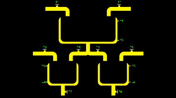

Schemat B. 
|
||||||||||||||||||||||||||||
Obiekt ten sk³ada siê z trzech zbiorników, zaworów wlewowych Z1, Z2, Z3, Z6 oraz z zaworów spustowych Z4, Z5, Z7, Z8. W zbiornikach znajduj± siê czujniki po-ziomu cieczy: X1, X2 (dla zbiornika nr 1), X3, X4 (dla zbiornika nr 2), X5, X6 (dla zbiornika nr 3). Wszystkie zawory s± binarne (1 - otwarty, 0 - zamkniêty). Ramka danych wyj¶ciowych (stan obiektu).
Ramka danych wej¶ciowych (steruj±cych).
Sterowanie klawiatur±. |
||||||||||||||||||||||||||||